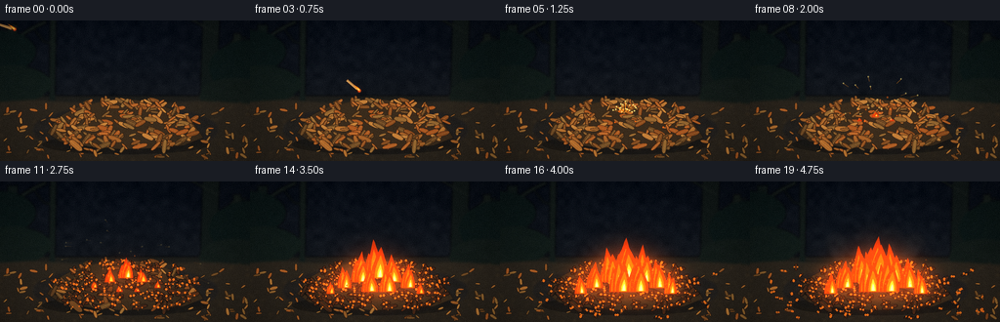
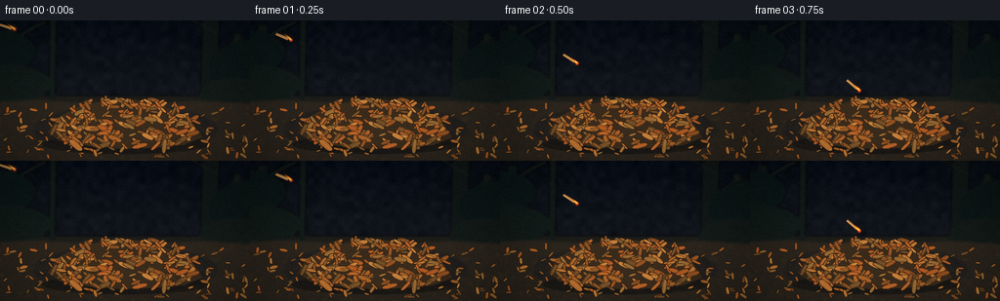

CODING AGENTS AS PIXEL WORLD MODELS
traex/DeepSeek-V4.1-Flash · phygen_142
点击播放 · 原生 RGB 像素
此结果可播放，但该运行尚未通过最终提交审核。页面展示不代表评测通过。
逐轮保存的候选
回放视频、检查图与代码变化。
每份候选均可单独播放。实际图片检查记录在下方工具轨迹中。
候选 01播放与检查图
点击播放 · 原生 RGB 像素


展开代码变化
--- 上一保存版本
+++ 本次保存版本
@@ -0,0 +1,528 @@
+from pathlib import Path
+import math
+import subprocess
+
+import numpy as np
+from PIL import Image, ImageDraw, ImageFilter
+
+import artifact_io
+
+
+W, H, N, FPS = 256, 144, 20, 4
+S = 4
+RNG = np.random.default_rng(142)
+
+IMPACT = (128.0, 95.0)
+FIRE_SEEDS = [
+ (128.0, 98.0, 0.00, 1.00),
+ (112.0, 102.0, 0.07, 0.78),
+ (145.0, 102.0, 0.09, 0.80),
+ (96.0, 108.0, 0.23, 0.64),
+ (161.0, 108.0, 0.25, 0.67),
+ (122.0, 112.0, 0.30, 0.82),
+ (140.0, 112.0, 0.34, 0.84),
+ (82.0, 114.0, 0.49, 0.48),
+ (174.0, 114.0, 0.51, 0.50),
+]
+
+
+def clamp(x, lo=0.0, hi=1.0):
+ return max(lo, min(hi, x))
+
+
+def smoothstep(x):
+ x = clamp(x)
+ return x * x * (3.0 - 2.0 * x)
+
+
+def mix(a, b, t):
+ return tuple(int(round(a[i] * (1.0 - t) + b[i] * t)) for i in range(3))
+
+
+def scale_pts(points):
+ return [(int(round(x * S)), int(round(y * S))) for x, y in points]
+
+
+def draw_poly(draw, points, fill, outline=None, width=2):
+ pts = scale_pts(points)
+ draw.polygon(pts, fill=fill)
+ if outline is not None:
+ draw.line(pts + [pts[0]], fill=outline, width=width, joint="curve")
+
+
+def draw_line(draw, points, fill, width=2):
+ draw.line(scale_pts(points), fill=fill, width=width, joint="curve")
+
+
+def leaf_points(cx, cy, length, width, angle, phase=0.0):
+ t = np.linspace(0.0, math.tau, 22, endpoint=False)
+ lx = 0.5 * length * np.cos(t)
+ ly = 0.5 * width * np.sin(t) * (0.78 + 0.22 * np.cos(t) ** 2)
+ ca, sa = math.cos(angle), math.sin(angle)
+ x = cx + lx * ca - ly * sa
+ y = cy + lx * sa + ly * ca
+ return list(zip(x.tolist(), y.tolist()))
+
+
+def draw_leaf(draw, leaf, f, energy):
+ cx = leaf["x"] + leaf["dx"]
+ cy = leaf["y"] + leaf["dy"]
+ length = leaf["length"]
+ width = leaf["width"]
+ angle = leaf["angle"] + leaf["spin"]
+ fill = leaf["color"]
+ outline = (44, 30, 18)
+
+ nearest = min(math.hypot(cx - sx, cy - sy) for sx, sy, _, _ in FIRE_SEEDS)
+ threshold = 0.12 + nearest / 150.0 + leaf["burn_bias"]
+ burn = smoothstep((energy - threshold) / 0.22)
+ if burn > 0:
+ fill = mix(fill, (31, 25, 22), 0.82 * burn)
+ outline = mix(outline, (14, 12, 11), burn)
+
+ pts = leaf_points(cx, cy, length, width, angle, leaf["phase"])
+ draw_poly(draw, pts, fill, outline, max(1, S // 2))
+
+ ca, sa = math.cos(angle), math.sin(angle)
+ vein_col = mix(fill, (229, 171, 82), 0.46)
+ if burn > 0.25:
+ vein_col = mix(vein_col, (113, 45, 18), min(1.0, burn * 1.25))
+ vein = [
+ (cx - ca * length * 0.43, cy - sa * length * 0.43),
+ (cx + ca * length * 0.43, cy + sa * length * 0.43),
+ ]
+ draw_line(draw, vein, vein_col, max(1, S // 2))
+
+ if length > 11.0:
+ side_col = mix(vein_col, outline, 0.25)
+ for frac in (-0.12, 0.10, 0.28):
+ bx = cx + ca * length * frac
+ by = cy + sa * length * frac
+ for side in (-1.0, 1.0):
+ ex = bx - sa * width * 0.27 * side + ca * length * 0.13
+ ey = by + ca * width * 0.27 * side + sa * length * 0.13
+ draw_line(draw, [(bx, by), (ex, ey)], side_col, 1)
+
+ if burn > 0.42 and energy > 0.45:
+ ember = (255, 117, 28)
+ for k in range(2):
+ ex = cx + math.cos(leaf["phase"] + k * 2.6) * length * 0.22
+ ey = cy + math.sin(leaf["phase"] + k * 2.6) * width * 0.18
+ r = 0.7 + 0.45 * (0.5 + 0.5 * math.sin(f * 2.1 + leaf["phase"]))
+ draw.ellipse(
+ ((ex - r) * S, (ey - r) * S, (ex + r) * S, (ey + r) * S),
+ fill=ember,
+ )
+
+
+def make_background():
+ size = (W * S, H * S)
+ yy = np.linspace(0.0, 1.0, H * S)[:, None]
+ top = np.array([8, 14, 24], dtype=float)
+ low = np.array([27, 29, 31], dtype=float)
+ grad = top[None, None, :] * (1.0 - yy[:, :, None]) + low[None, None, :] * yy[:, :, None]
+ arr = np.repeat(grad, W * S, axis=1)
+
+ low_noise = RNG.normal(0.0, 1.0, (24, 43))
+ noise_img = Image.fromarray(np.uint8(np.clip(low_noise * 18 + 128, 0, 255)))
+ noise_img = noise_img.resize(size, Image.Resampling.BICUBIC)
+ noise = (np.asarray(noise_img).astype(float) - 128.0) * 0.12
+ arr += noise[:, :, None]
+
+ img = Image.fromarray(np.uint8(np.clip(arr, 0, 255))).convert("RGB")
+ bg = Image.new("RGBA", size, (0, 0, 0, 0))
+ d = ImageDraw.Draw(bg, "RGBA")
+
+ # Soft distant trunks and undergrowth keep the foreground readable.
+ d.rectangle((0, 77 * S, W * S, H * S), fill=(28, 28, 25, 255))
+ for x, top_y, wid, col in [
+ (12, 4, 11, (18, 27, 26, 255)),
+ (54, -8, 7, (19, 27, 25, 255)),
+ (215, -4, 18, (17, 24, 23, 255)),
+ (242, 13, 8, (22, 29, 26, 255)),
+ ]:
+ pts = [
+ (x - wid * 0.42, top_y),
+ (x + wid * 0.55, top_y),
+ (x + wid * 0.33, 92),
+ (x - wid * 0.58, 94),
+ ]
+ draw_poly(d, pts, col)
+ d.line(scale_pts([(18, 17), (34, 7), (47, 1)]), fill=(23, 31, 28, 255), width=4 * S)
+ d.line(scale_pts([(35, 9), (44, 21), (58, 25)]), fill=(22, 30, 27, 255), width=2 * S)
+ d.line(scale_pts([(223, 14), (205, 4), (190, -4)]), fill=(22, 29, 27, 255), width=3 * S)
+ d.line(scale_pts([(224, 35), (239, 20), (252, 17)]), fill=(23, 30, 27, 255), width=2 * S)
+
+ # Dim foliage masses at the edges.
+ for x, y, rx, ry, col in [
+ (-5, 32, 42, 23, (12, 25, 23, 210)),
+ (14, 65, 38, 19, (18, 30, 24, 190)),
+ (260, 48, 46, 29, (12, 24, 22, 220)),
+ (239, 77, 35, 18, (20, 29, 23, 190)),
+ ]:
+ d.ellipse(((x - rx) * S, (y - ry) * S, (x + rx) * S, (y + ry) * S), fill=col)
+
+ # Ground and loose leaf litter.
+ d.polygon(scale_pts([(0, 83), (32, 81), (76, 84), (119, 82), (161, 85),
+ (207, 82), (256, 85), (256, 144), (0, 144)]),
+ fill=(43, 37, 29))
+ d.ellipse((33 * S, 86 * S, 224 * S, 138 * S), fill=(55, 44, 31, 95))
+ for _ in range(420):
+ x = RNG.uniform(0, W)
+ y = RNG.uniform(83, H)
+ if 57 < x < 201 and y < 126:
+ continue
+ r = RNG.uniform(0.25, 1.25)
+ col = RNG.choice([(67, 52, 34), (82, 61, 36), (91, 70, 40), (46, 39, 29)])
+ d.ellipse(((x - r) * S, (y - r * 0.45) * S,
+ (x + r) * S, (y + r * 0.45) * S), fill=tuple(col) + (130,))
+
+ bg = bg.filter(ImageFilter.GaussianBlur(1.15 * S))
+ img = Image.alpha_composite(img.convert("RGBA"), bg)
+ return img.convert("RGB")
+
+
+def make_litter_and_pile():
+ litter = []
+ palette = [
+ (157, 91, 37), (137, 72, 29), (178, 111, 46), (123, 70, 30),
+ (164, 83, 31), (112, 76, 38), (187, 124, 55), (143, 99, 47),
+ (102, 67, 34), (173, 92, 36),
+ ]
+ for _ in range(74):
+ while True:
+ x = RNG.uniform(2, 253)
+ y = RNG.uniform(86, 140)
+ if not (52 < x < 207 and y < 128):
+ break
+ length = RNG.uniform(4.0, 8.8)
+ litter.append({
+ "x": x, "y": y, "length": length, "width": length * RNG.uniform(0.36, 0.55),
+ "angle": RNG.uniform(-math.pi, math.pi), "color": palette[int(RNG.integers(len(palette)))],
+ "dx": 0.0, "dy": 0.0, "spin": 0.0, "phase": RNG.uniform(0, math.tau),
+ "burn_bias": RNG.uniform(0.32, 0.58),
+ })
+
+ pile = []
+ for _ in range(184):
+ y = RNG.uniform(81.0, 129.0)
+ n = (y - 107.0) / 26.5
+ half = 63.0 * math.sqrt(max(0.02, 1.0 - n * n)) + 12.0
+ x = 128.0 + RNG.uniform(-half, half)
+ length = RNG.uniform(7.5, 15.0) * (0.83 + 0.28 * (y - 80.0) / 49.0)
+ width = length * RNG.uniform(0.34, 0.53)
+ angle = RNG.uniform(-1.15, 1.15)
+ if RNG.random() < 0.12:
+ angle += math.pi * 0.5
+ pile.append({
+ "x": x, "y": y, "length": length, "width": width, "angle": angle,
+ "color": palette[int(RNG.integers(len(palette)))],
+ "dx": 0.0, "dy": 0.0, "spin": 0.0, "phase": RNG.uniform(0, math.tau),
+ "burn_bias": RNG.uniform(-0.03, 0.16),
+ })
+
+ # A few leaves projecting from the silhouette make the mound feel loose.
+ for x, y, ang, ln in [
+ (55, 112, -1.1, 13), (63, 118, -0.5, 11), (198, 111, 1.0, 14),
+ (190, 120, 0.55, 12), (75, 91, -1.3, 10), (181, 90, 1.2, 11),
+ ]:
+ pile.append({
+ "x": x, "y": y, "length": ln, "width": ln * 0.42, "angle": ang,
+ "color": palette[int(RNG.integers(len(palette)))],
+ "dx": 0.0, "dy": 0.0, "spin": 0.0, "phase": RNG.uniform(0, math.tau),
+ "burn_bias": RNG.uniform(0.0, 0.12),
+ })
+
+ litter.sort(key=lambda q: q["y"])
+ pile.sort(key=lambda q: q["y"])
+ return litter, pile
+
+
+LITTER, PILE = make_litter_and_pile()
+BACKGROUND = make_background()
+
+
+def impact_motion(f):
+ if f < 4:
+ return
+ pulse = math.exp(-(f - 4) / 1.7)
+ for leaf in PILE + LITTER:
+ d = math.hypot(leaf["x"] - IMPACT[0], leaf["y"] - IMPACT[1])
+ if d < 48.0:
+ nx = (leaf["x"] - IMPACT[0]) / max(1.0, d)
+ ny = (leaf["y"] - IMPACT[1]) / max(1.0, d)
+ push = (1.0 - d / 48.0) * pulse
+ leaf["dx"] = nx * 8.5 * push
+ leaf["dy"] = ny * 5.5 * push
+ leaf["spin"] = 0.28 * push * (1 if leaf["phase"] > math.pi else -1)
+ if f == 4:
+ for leaf in sorted(PILE, key=lambda q: math.hypot(q["x"] - IMPACT[0], q["y"] - IMPACT[1]))[:12]:
+ leaf["dx"] += RNG.uniform(-3.5, 3.5)
+ leaf["dy"] -= RNG.uniform(1.0, 5.5)
+
+
+def draw_smoke(img, f, energy):
+ if f < 7:
+ return img
+ smoke = Image.new("RGBA", img.size, (0, 0, 0, 0))
+ d = ImageDraw.Draw(smoke, "RGBA")
+ plumes = [
+ (128, 97, 7, 0.08), (112, 102, 9, 0.13),
+ (146, 101, 11, 0.16), (96, 108, 14, 0.28),
+ (162, 108, 16, 0.31),
+ ]
+ for pi, (sx, sy, start, gain) in enumerate(plumes):
+ if f < start:
+ continue
+ p = clamp((f - start) / max(1.0, 19 - start))
+ puffs = 7
+ for j in range(puffs):
+ u = j / (puffs - 1)
+ rise = (3.5 + 40.0 * p) * u
+ drift = math.sin(f * 0.52 + pi * 1.8 + u * 2.4) * (2.0 + 7.0 * u)
+ x = sx + drift + (pi - 2) * 0.7 * u
+ y = sy - rise - 3.0 * p
+ rx = (3.2 + 8.0 * u) * (0.72 + 0.32 * p)
+ ry = (2.6 + 7.0 * u) * (0.68 + 0.30 * p)
+ alpha = int(255 * gain * (0.18 + 0.45 * p) * (0.55 + 0.45 * u))
+ if j == puffs - 1:
+ alpha = int(alpha * 0.7)
+ d.ellipse(
+ ((x - rx) * S, (y - ry) * S, (x + rx) * S, (y + ry) * S),
+ fill=(88, 79, 71, alpha),
+ )
+ smoke = smoke.filter(ImageFilter.GaussianBlur(2.7 * S))
+ return Image.alpha_composite(img.convert("RGBA"), smoke).convert("RGB")
+
+
+def flame_polygon(cx, base_y, height, width, sway):
+ u = np.linspace(0.0, 1.0, 17)
+ y = base_y - height * u
+ half = width * 0.5 * (1.0 - u) ** 0.78 * (0.88 + 0.24 * np.sin(np.pi * u))
+ center = cx + sway * (u ** 1.75)
+ left = list(zip((center - half).tolist(), y.tolist()))
+ right = list(zip((center + half).tolist(), y.tolist()))
+ return left + right[::-1]
+
+
+def draw_flames(img, f, energy):
+ if f < 4:
+ return img
+ layer = Image.new("RGBA", img.size, (0, 0, 0, 0))
+ d = ImageDraw.Draw(layer, "RGBA")
+ for si, (sx, sy, threshold, scale) in enumerate(FIRE_SEEDS):
+ local = clamp((energy - threshold) / max(0.02, 1.0 - threshold))
+ local = smoothstep(local)
+ if local <= 0.006:
+ continue
+ base_h = (2.5 + 44.0 * local) * scale
+ base_w = (4.0 + 17.5 * local) * scale
+ for tongue in range(3):
+ off = (tongue - 1) * base_w * 0.24
+ scale_t = [0.70, 1.0, 0.76][tongue]
+ phase = si * 1.91 + tongue * 1.23
+ flicker = 1.0 + 0.08 * math.sin(f * 2.17 + phase)
+ h = max(1.8, base_h * scale_t * flicker)
+ w = max(2.0, base_w * (0.78 + 0.12 * tongue))
+ sway = math.sin(f * 1.67 + phase) * h * 0.085
+ outer = flame_polygon(sx + off, sy + 1.0, h, w, sway)
+ mid_h = h * 0.72
+ mid_w = w * 0.61
+ middle = flame_polygon(sx + off + sway * 0.14, sy + 0.5, mid_h, mid_w, sway * 0.62)
+ inner = flame_polygon(sx + off + sway * 0.25, sy, h * 0.42, w * 0.33, sway * 0.38)
+ d.polygon(scale_pts(outer), fill=(230, 55, 8, 205))
+ if h > 5.0:
+ d.polygon(scale_pts(middle), fill=(255, 116, 11, 228))
+ if h > 3.2:
+ d.polygon(scale_pts(inner), fill=(255, 207, 49, 246))
+ if h > 13.0:
+ core = flame_polygon(sx + off + sway * 0.3, sy - 0.3,
+ h * 0.24, w * 0.18, sway * 0.28)
+ d.polygon(scale_pts(core), fill=(255, 247, 178, 250))
+ return Image.alpha_composite(img.convert("RGBA"), layer).convert("RGB")
+
+
+def draw_match(img, f):
+ if f > 4:
+ return img
+ heads = [(15, 9), (42, 20), (79, 44), (112, 72), (128, 94)]
+ hx, hy = heads[f]
+ if f == 0:
+ tx, ty = hx - 16, hy - 5
+ else:
+ px, py = heads[f - 1]
+ vx, vy = hx - px, hy - py
+ vm = max(1.0, math.hypot(vx, vy))
+ tx, ty = hx - vx / vm * 17.0, hy - vy / vm * 17.0
+ vx, vy = hx - tx, hy - ty
+ vm = max(1.0, math.hypot(vx, vy))
+ nx, ny = -vy / vm, vx / vm
+ stick = [
+ (tx + nx * 1.15, ty + ny * 1.15),
+ (hx - vx / vm * 3.1 + nx * 1.45, hy - vy / vm * 3.1 + ny * 1.45),
+ (hx - vx / vm * 3.1 - nx * 1.45, hy - vy / vm * 3.1 - ny * 1.45),
+ (tx - nx * 1.15, ty - ny * 1.15),
+ ]
+ d = ImageDraw.Draw(img, "RGBA")
+ draw_poly(d, stick, (190, 139, 76), (72, 47, 28), 2)
+ draw_line(d, [(tx + nx * 0.6, ty + ny * 0.6), (hx - vx / vm * 3.2 + nx * 0.7,
+ hy - vy / vm * 3.2 + ny * 0.7)],
+ (233, 184, 109), 2)
+ head_r = 2.15 if f < 4 else 2.45
+ d.ellipse(((hx - head_r) * S, (hy - head_r) * S,
+ (hx + head_r) * S, (hy + head_r) * S), fill=(83, 29, 19, 255))
+ d.ellipse(((hx - head_r * 0.62) * S, (hy - head_r * 0.62) * S,
+ (hx + head_r * 0.62) * S, (hy + head_r * 0.62) * S), fill=(232, 88, 25, 255))
+ # The tiny flame trails behind the moving head.
+ trail = 0.0 if f == 4 else 1.0
+ tip_x = hx - vx / vm * (5.0 + trail * 1.5)
+ tip_y = hy - vy / vm * (5.0 + trail * 1.5) - 1.0
+ flame = flame_polygon(hx - vx / vm * 1.0, hy - vy / vm * 1.0,
+ 5.0 + 0.8 * math.sin(f * 2.2), 3.7, tip_x - hx)
+ d.polygon(scale_pts(flame), fill=(255, 128, 18, 235))
+ inner = flame_polygon(hx - vx / vm * 0.8, hy - vy / vm * 0.8,
+ 2.7, 1.7, (tip_x - hx) * 0.5)
+ d.polygon(scale_pts(inner), fill=(255, 231, 112, 250))
+ return img
+
+
+def draw_sparks(img, f):
+ if f < 4:
+ return img
+ d = ImageDraw.Draw(img, "RGBA")
+ # Initial impact burst.
+ burst = 22
+ for i in range(burst):
+ ang = -math.pi * (0.08 + 0.84 * i / (burst - 1)) + RNG.uniform(-0.10, 0.10)
+ speed = RNG.uniform(4.0, 14.0)
+ age = f - 4
+ if age > 7:
+ continue
+ x = IMPACT[0] + math.cos(ang) * speed * age
+ y = IMPACT[1] + math.sin(ang) * speed * age + 0.7 * age * age
+ px = x - math.cos(ang) * speed * 0.65
+ py = y - math.sin(ang) * speed * 0.65 - 0.7 * (2 * age - 1) * 0.65
+ alpha = int(255 * (1.0 - age / 8.0))
+ d.line(scale_pts([(px, py), (x, y)]), fill=(255, 143, 30, alpha), width=max(1, S // 2))
+ r = 0.75
+ d.ellipse(((x - r) * S, (y - r) * S, (x + r) * S, (y + r) * S),
+ fill=(255, 229, 125, alpha))
+
+ # Embers continuously peel off the growing fire.
+ for i in range(34):
+ birth = 4 + int(RNG.integers(0, 15))
+ age = f - birth
+ if age < 0 or age > 8:
+ continue
+ seed = FIRE_SEEDS[i % len(FIRE_SEEDS)]
+ x0 = seed[0] + RNG.uniform(-7, 7)
+ y0 = seed[1] - RNG.uniform(1, 11)
+ vx = RNG.uniform(-2.5, 2.5)
+ vy = RNG.uniform(-5.5, -1.8)
+ x = x0 + vx * age
+ y = y0 + vy * age + 0.35 * age * age
+ alpha = int(225 * clamp(1.0 - age / 9.0))
+ r = 0.55 + 0.35 * RNG.random()
+ d.ellipse(((x - r) * S, (y - r) * S, (x + r) * S, (y + r) * S),
+ fill=(255, 105, 24, alpha))
+ return img
+
+
+def draw_impact_flash(img, f):
+ if f != 4:
+ return img
+ d = ImageDraw.Draw(img, "RGBA")
+ for r, a in [(14, 30), (8, 50), (4, 80)]:
+ d.ellipse(((IMPACT[0] - r) * S, (IMPACT[1] - r * 0.7) * S,
+ (IMPACT[0] + r) * S, (IMPACT[1] + r * 0.7) * S),
+ fill=(255, 145, 38, a))
+ return img
+
+
+def finish_frame(img, f, energy):
+ arr = np.asarray(img).astype(float)
+ yy, xx = np.mgrid[0:H, 0:W]
+ glow = np.zeros((H, W), dtype=float)
+ for si, (sx, sy, threshold, scale) in enumerate(FIRE_SEEDS):
+ local = clamp((energy - threshold) / max(0.02, 1.0 - threshold))
+ local = smoothstep(local)
+ if local <= 0:
+ continue
+ cx = sx + math.sin(f * 1.67 + si * 1.91) * 1.8
+ cy = sy - 10.0 * local
+ sx2 = 13.0 + 10.0 * local * scale
+ sy2 = 10.0 + 13.0 * local * scale
+ glow += local * np.exp(-(((xx - cx) / sx2) ** 2 + ((yy - cy) / sy2) ** 2))
+ if f == 4:
+ glow += 1.1 * np.exp(-(((xx - IMPACT[0]) / 12.0) ** 2 +
+ ((yy - IMPACT[1]) / 8.0) ** 2))
+ glow = np.clip(glow, 0, 1.25)
+ warm = np.array([168.0, 58.0, 12.0])
+ arr += glow[:, :, None] * warm[None, None, :] * 0.42
+
+ # A restrained bloom and vignette keep the fire luminous without flattening the scene.
+ bright = np.clip(arr - 135.0, 0, None)
+ bright_img = Image.fromarray(np.uint8(np.clip(bright, 0, 255)))
+ bright_blur = np.asarray(bright_img.filter(ImageFilter.GaussianBlur(2.2))).astype(float)
+ arr += bright_blur * 0.28
+
+ cx, cy = W * 0.5, H * 0.54
+ rad = np.sqrt(((xx - cx) / (W * 0.62)) ** 2 + ((yy - cy) / (H * 0.72)) ** 2)
+ vig = np.clip(1.0 - 0.42 * np.clip((rad - 0.42) / 0.8, 0, 1), 0.55, 1.0)
+ arr *= vig[:, :, None]
+ grain = RNG.normal(0.0, 1.4, (H, W, 1))
+ arr += grain
+ return np.uint8(np.clip(arr, 0, 255))
+
+
+def render_frame(f):
+ energy = 0.0 if f < 4 else smoothstep((f - 4.0) / 15.0)
+ img = BACKGROUND.copy()
+ img = draw_smoke(img, f, energy)
+
+ d = ImageDraw.Draw(img, "RGBA")
+ # Pile shadow and a dark, irregular mass beneath the leaves.
+ d.ellipse((43 * S, 117 * S, 213 * S, 137 * S), fill=(15, 14, 12, 120))
+ mound = [(48, 115), (59, 99), (80, 88), (108, 82), (129, 80),
+ (154, 83), (177, 91), (198, 105), (208, 120), (188, 128),
+ (157, 131), (124, 132), (91, 129), (61, 124)]
+ draw_poly(d, mound, (57, 43, 28), (32, 25, 18), 2)
+
+ for leaf in LITTER:
+ draw_leaf(d, leaf, f, energy)
+ for leaf in PILE:
+ draw_leaf(d, leaf, f, energy)
+
+ img = draw_impact_flash(img, f)
+ img = draw_flames(img, f, energy)
+ img = draw_match(img, f)
+ img = draw_sparks(img, f)
+ img = img.resize((W, H), Image.Resampling.LANCZOS)
+ return finish_frame(img, f, energy)
+
+
+def main():
+ here = Path(__file__).resolve().parent
+ frames = [render_frame(f) for f in range(N)]
+ artifact_io.save(frames, here)
+
+ # Also provide a directly playable RGB video alongside the frame-based player.
+ try:
+ import imageio_ffmpeg
+ ffmpeg = imageio_ffmpeg.get_ffmpeg_exe()
+ raw = frames[0].tobytes()
+ process = subprocess.Popen([
+ ffmpeg, "-y", "-f", "rawvideo", "-pix_fmt", "rgb24",
+ "-s", f"{W}x{H}", "-r", str(FPS), "-i", "-",
+ "-an", "-c:v", "libx264", "-pix_fmt", "yuv420p",
+ "-movflags", "+faststart", str(here / "video.mp4"),
+ ], stdin=subprocess.PIPE, stdout=subprocess.DEVNULL, stderr=subprocess.DEVNULL)
+ process.communicate(b"".join(frame.tobytes() for frame in frames))
+ except Exception as exc:
+ print(f"MP4 encode skipped: {exc}")
+
+ print(f"Rendered {N} frames at {W}x{H}, {FPS} fps")
+
+
+if __name__ == "__main__":
+ main()
候选 02播放与检查图
点击播放 · 原生 RGB 像素

展开代码变化
--- 上一保存版本
+++ 本次保存版本
@@ -383,6 +383,16 @@
inner = flame_polygon(hx - vx / vm * 0.8, hy - vy / vm * 0.8,
2.7, 1.7, (tip_x - hx) * 0.5)
d.polygon(scale_pts(inner), fill=(255, 231, 112, 250))
+
+ # Tiny sparks peel away in the direction opposite the throw.
+ if f < 4:
+ for j in range(2):
+ age = 0.7 + j * 0.65
+ sx = hx - vx / vm * (2.6 + age * 2.2) + nx * (j - 0.5) * 2.2
+ sy = hy - vy / vm * (2.6 + age * 2.2) + ny * (j - 0.5) * 2.2
+ d.ellipse(((sx - 0.55) * S, (sy - 0.55) * S,
+ (sx + 0.55) * S, (sy + 0.55) * S),
+ fill=(255, 153, 37, 220 - j * 45))
return img
@@ -443,6 +453,11 @@
arr = np.asarray(img).astype(float)
yy, xx = np.mgrid[0:H, 0:W]
glow = np.zeros((H, W), dtype=float)
+ if f < 4:
+ match_heads = [(15, 9), (42, 20), (79, 44), (112, 72)]
+ mx, my = match_heads[f]
+ glow += 0.34 * np.exp(-(((xx - mx) / 6.5) ** 2 +
+ ((yy - my) / 6.5) ** 2))
for si, (sx, sy, threshold, scale) in enumerate(FIRE_SEEDS):
local = clamp((energy - threshold) / max(0.02, 1.0 - threshold))
local = smoothstep(local)
候选 03播放与检查图
可观测工具轨迹
实际执行的命令与返回图片。
命令 1exit 0
/bin/bash -c 'ls -la'
命令 2exit 0
/bin/bash -c "pwd && rg --files -g 'prompt.txt' -g 'GENERATION_RULES.md' -g 'task_spec.json' -g '"'!node_modules'"'"
命令 3exit 0
/bin/bash -c 'git status --short --branch'
命令 4exit 0
/bin/bash -c 'cat prompt.txt'
命令 5exit 0
/bin/bash -c 'cat GENERATION_RULES.md'
命令 6exit 0
/bin/bash -c 'cat task_spec.json'
命令 7exit 0
/bin/bash -c "sed -n '1,240p' artifact_io.py"
命令 8exit 0
/bin/bash -c "sed -n '1,240p' player_template.html"
命令 9exit 0
/bin/bash -c "python - <<'PY'
import numpy, PIL
print('numpy', numpy.__version__)
print('PIL', PIL.__version__)
PY"命令 10exit 0
/bin/bash -c 'command -v ffmpeg || true; command -v python; python --version'
命令 11exit 0
/bin/bash -c "python - <<'PY'
try:
import scipy; print('scipy', scipy.__version__)
except Exception as e: print('no scipy', e)
try:
import cv2; print('cv2', cv2.__version__)
except Exception as e: print('no cv2', e)
PY"命令 12exit 0
/bin/bash -c 'command -v ffmpeg; ffmpeg -version | head -n 2'
命令 13exit 0
/bin/bash -c "python - <<'PY' import imageio print(imageio.__version__) print(imageio.get_writer) PY"
命令 14exit 0
/bin/bash -c "python - <<'PY'
import cv2, numpy as np, tempfile, os
p='/tmp/test_pw.mp4'
w=cv2.VideoWriter(p, cv2.VideoWriter_fourcc(*'mp4v'), 4.0, (256,144))
print('opened',w.isOpened())
for i in range(3): w.write(np.zeros((144,256,3),np.uint8))
w.release(); print(os.path.getsize(p) if os.path.exists(p) else 'none')
PY"命令 15exit 0
/bin/bash -c "python - <<'PY' from PIL import features print(features.get_supported()) PY"
命令 16exit 0
/bin/bash -c "python - <<'PY'
try:
import imageio_ffmpeg
print(imageio_ffmpeg.get_ffmpeg_exe())
except Exception as e: print('no',e)
PY"命令 17exit 0
/bin/bash -c "python - <<'PY'
import importlib.util
for m in ['av','moviepy','imageio.v3']:
print(m, bool(importlib.util.find_spec(m.split('.')[0])))
PY"命令 18exit 1
/bin/bash -c 'python generate.py'
命令 19exit 0
/bin/bash -c 'python generate.py'
命令 20exit 0
/bin/bash -c 'ls -lh frames/*.png inspection.png transition_check.png video.mp4 index.html pixels.npz | tail -n 12'
命令 21exit 0
/bin/bash -c "python - <<'PY'
from PIL import Image
im=Image.open('inspection.png')
im.resize((1536, 660)).save('.tmp/inspection_large.png')
PY"命令 22exit 0
/bin/bash -c "python - <<'PY'
from PIL import Image
import numpy as np
chars=' .,:;irsXA253hMHGS#9B&@'
for f in [0,2,4,6,9,12,15,19]:
a=np.asarray(Image.open(f'frames/{f:02d}.png').convert('L').resize((80,32)))
print(f'FRAME {f:02d}')
for row in a:
print(''.join(chars[min(len(chars)-1,int(v/256*len(chars)))] for v in row))
PY"命令 23exit 0
/bin/bash -c "python - <<'PY' import imageio_ffmpeg, subprocess ff=imageio_ffmpeg.get_ffmpeg_exe() p=subprocess.run([ff,'-hide_banner','-i','video.mp4'],capture_output=True,text=True) print(p.stderr) PY"
命令 24exit 0
/bin/bash -c "python - <<'PY'
from PIL import Image
for f in [0,2,4,8,12,19]:
im=Image.open(f'frames/{f:02d}.png')
im.resize((1024,576), Image.Resampling.NEAREST).save(f'.tmp/f{f:02d}.png')
PY"命令 25exit 0
/bin/bash -c "python - <<'PY'
from PIL import Image
import numpy as np
for f in [0,2,4,8,12,19]:
a=np.asarray(Image.open(f'frames/{f:02d}.png')).astype(float)
print(f, 'mean', a.mean(axis=(0,1)).round(1), 'std', a.std().round(1), 'p99', np.percentile(a,99).round(1), 'nonbg', (a.mean(2)>45).mean().round(3))
PY"命令 26exit 0
/bin/bash -c 'python generate.py'
命令 27exit 0
/bin/bash -c "python - <<'PY'
from pathlib import Path
from PIL import Image
import numpy as np
files=sorted(Path('frames').glob('*.png'))
assert len(files)==20, len(files)
arr=np.stack([np.asarray(Image.open(p)) for p in files])
assert arr.shape==(20,144,256,3), arr.shape
assert arr.dtype==np.uint8
assert all(np.array_equal(arr[i],arr[i-1]) is False for i in range(1,20))
z=np.load('pixels.npz')
assert z['pixels'].shape==(144,256,20)
print('frames', arr.shape, 'range', int(arr.min()), int(arr.max()))
print('unique adjacent frames: 19/19')
print('npz', z['pixels'].shape, z['pixels'].dtype)
PY"命令 28exit 0
/bin/bash -c "python - <<'PY'
import imageio.v3 as iio
import numpy as np
v=iio.imread('video.mp4', plugin='FFMPEG')
print('decoded', v.shape, v.dtype, 'mean', round(float(v.mean()),2))
assert v.shape==(20,144,256,3)
PY"命令 29exit 0
/bin/bash -c 'command -v node && node --version || true'
命令 30exit 0
/bin/bash -c 'ls -lh generate.py video.mp4 index.html inspection.png transition_check.png pixels.npz'
命令 31exit 0
/bin/bash -c "python - <<'PY'
from pathlib import Path
from PIL import Image
import numpy as np
files=sorted(Path('frames').glob('*.png'))
arr=np.stack([np.asarray(Image.open(p)) for p in files])
# Flame-colored pixel growth gives a simple objective check that the fire spreads.
for i in [0,4,8,12,16,19]:
a=arr[i].astype(int)
hot=((a[:,:,0]>180)&(a[:,:,0]>a[:,:,1]*1.25)&(a[:,:,1]>a[:,:,2]*1.5))
print(i, 'hot pixels', int(hot.sum()), 'bbox', (np.where(hot)[1].min(),np.where(hot)[1].max()) if hot.any() else None)
PY"命令 32exit 0
/bin/bash -c "python - <<'PY'
from PIL import Image
import numpy as np
for f in [0,4,8,12,19]:
a=np.asarray(Image.open(f'frames/{f:02d}.png')).astype(int)
# Match/flame pixels only: strongly orange, saturated, and in the upper action area.
m=(a[:,:,0]>210)&(a[:,:,0]>a[:,:,1]*1.15)&(a[:,:,1]>a[:,:,2]*1.8)&(a[:,:,1]<190)
ys,xs=np.where(m)
print(f, len(xs), (int(xs.min()),int(xs.max()),int(ys.min()),int(ys.max())) if len(xs) else None)
PY"命令 33exit 0
/bin/bash -c "python - <<'PY'
from PIL import Image
import numpy as np
# Check the airborne match's warm core is visible against the dark background.
for f in range(5):
a=np.asarray(Image.open(f'frames/{f:02d}.png')).astype(int)
# sampled near the intended trajectory head; report max warm-channel contrast nearby
heads=[(15,9),(42,20),(79,44),(112,72),(128,94)]
x,y=heads[f]
p=a[max(0,y-5):y+6,max(0,x-5):x+6]
print(f, 'maxR',p[:,:,0].max(),'maxG',p[:,:,1].max(),'median',np.median(p[:,:,0]))
PY"命令 34exit 0
/bin/bash -c "node - <<'JS'
const fs=require('fs');
const html=fs.readFileSync('index.html','utf8');
const m=html.match(/<script>([\\s\\S]*?)<\\/script>/);
if("'!m) throw new Error('"'missing player script');
new Function(m[1]);
console.log('player script syntax OK');
JS"命令 35exit 0
/bin/bash -c "python - <<'PY'
from pathlib import Path
import artifact_io
from PIL import Image
import numpy as np
frames=np.stack([np.asarray(Image.open(p)) for p in sorted(Path('frames').glob('*.png'))])
artifact_io.save(frames, Path('.'))
print('artifact_io.save rerun OK')
PY"保存候选 3 份；完成命令 35 次；可验证图片返回 0 张。原始 API 响应与完整日志保留在本地。